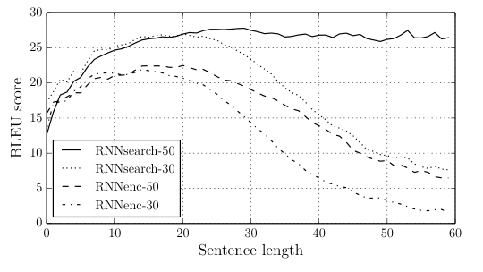
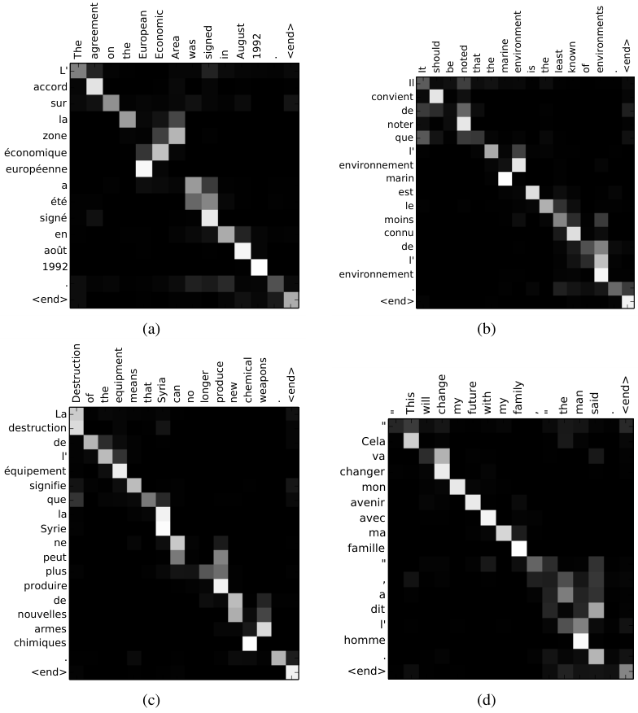

Attention learned to align long before it was asked to explain
The 2015 model that introduced attention rebuilt its read of the source at every output word, and the alignment maps it drew look linguistic without settling what the weights explain.
Neural Machine Translation by Jointly Learning to Align and Translate
Read the paperNeural machine translation is a recently proposed approach to machine translation. Unlike the traditional statistical machine translation, the neural machine translation aims at building a single neural network that can be jointly tuned to maximize the translation performance. The models proposed recently for neural machine translation often belong to a family of encoder-decoders and consists of an encoder that encodes a source sentence into a fixed-length vector from which a decoder generates a translation. In this paper, we conjecture that the use of a fixed-length vector is a bottleneck in improving the performance of this basic encoder-decoder architecture, and propose to extend this by allowing a model to automatically (soft-)search for parts of a source sentence that are relevant to predicting a target word, without having to form these parts as a hard segment explicitly. With this new approach, we achieve a translation performance comparable to the existing state-of-the-art phrase-based system on the task of English-to-French translation. Furthermore, qualitative analysis reveals that the (soft-)alignments found by the model agree well with our intuition.1
One vector for the whole sentence
The encoder-decoder that preceded this paper translates in two moves: an encoder reads the source sentence into a single fixed-length vector, and a decoder generates the target from that vector alone. That predecessor is concrete: in the RNN Encoder-Decoder of Cho and colleagues, one summary vector c of the whole source conditions every step of the decoder.2 Bahdanau, Cho, and Bengio named the cost of that design. One vector of fixed size has to carry everything the decoder will ever need about the source, so the longer the sentence, the more it has to drop to fit.1 Their fix keeps the encoder and changes what the decoder reads. In place of one summary for the whole sentence, the decoder computes a fresh read of the source at every output word, weighted toward the parts that bear on that word. The paper calls the read a soft alignment and learns it end to end.1
What the decoder reads at each step
At output step i the decoder emits the target word y_i from three things: the previous output y_{i-1}, its own recurrent state s_i, and a context vector c_i built for this step.1 Only c_i is new to the design, and it is a weighted average of the encoder's per-word annotations h_1, \dots, h_{T_x}.
The weights \alpha_{ij} form a distribution over source positions: one number per source word, non-negative and summing to one, produced by a softmax over alignment scores e_{ij}.1
The read is soft, then. The decoder does not choose one source word to copy from. It spreads a single unit of attention across all of them and concentrates it wherever the score runs high. Each annotation h_j is the concatenation of a forward and a backward pass over the source, so it summarizes the whole sentence with a focus on the words around position j, not just the prefix that precedes it.1
The network that scores the alignment
The scores e_{ij} are where the model decides what to read, and the paper's choice for them is deliberately small. The alignment model is a single-hidden-layer feedforward network, scoring how well the source around position j fits the next output given what the decoder has produced so far.1
- v_a^{\top}a learned vector that reads the hidden layer down to a single scalar score.
- \tanhthe one hidden layer; the whole score is this small feedforward net.
- W_a\, s_{i-1}the decoder's previous state, projected: what the model has produced so far.
- U_a\, h_jthe source annotation, projected; it does not depend on i.
Two properties of this line carry the paper. First, U_a\, h_j does not depend on the output step i, so it is computed once per source sentence and reused for every target word, which holds the added cost near linear.1 Second, the path from score to weighted read is differentiable end to end, so the gradient of the translation loss reaches the alignment itself. There is no discrete alignment variable to marginalize and no separate alignment model to fit first. The same backward pass that trains the translation trains what to align.1
The long-sentence test
The design makes a sharp prediction. If the fixed vector hurts by forcing compression, then relieving the compression should help most exactly where compression bites hardest: on long sentences. The same group had already measured the fall firsthand. Cho, Bahdanau, and colleagues reported that a fixed-length encoder-decoder translates short sentences with known words well but degrades rapidly as sentence length and the number of unknown words grow.3 Figure 1 answers that curve directly.1

Read it as data. The curves are BLEU on the full test set plotted against source length; RNNenc is the same encoder-decoder with the single fixed vector, and RNNsearch is the attention model. RNNenc climbs to roughly 20 BLEU on short sentences and then falls as sentences lengthen. RNNsearch stays flat, and RNNsearch-50 shows no decay even past fifty words.1 Table 1 puts the numbers under the curves.
| Model | BLEU (All) | BLEU (No UNK) |
|---|---|---|
| RNNenc-30 | 13.93 | 24.19 |
| RNNsearch-30 | 21.50 | 31.44 |
| RNNenc-50 | 17.82 | 26.71 |
| RNNsearch-50 | 26.75 | 34.16 |
| RNNsearch-50* | 28.45 | 36.15 |
| Moses | 33.30 | 35.63 |
The gap is not marginal. Trained on sentences up to thirty words, the attention model scores 21.50 BLEU against the baseline's 13.93, and it beats even the baseline trained on fifty-word sentences, which reaches 17.82.1 Trained longer, RNNsearch-50 reaches 28.45 on the full set and 36.15 once unknown-word sentences are dropped, edging the phrase-based Moses baseline at 35.63 on that restricted set. Moses had help the neural models did not: a separate 418-million-word monolingual corpus for its language model, a difference the paper flags rather than hides.1
One bound on the reading. The fall Figure 1 measures belongs to this fixed-vector architecture, not to every model that compresses a source into one vector. Sutskever, Vinyals, and Le reported the opposite for their deep reversed-input LSTM, which "did not have difficulty on long sentences", crediting a reversed source order that created short-term dependencies easier to optimize.4 The two claims do not collide, since they describe different architectures, and their BLEU scores sit in different vocabulary and decoding setups that no controlled comparison joins. What Bahdanau's model does is more basic than winning a length curve against one baseline. It removes the fixed vector, so the compression penalty cannot arise whichever encoder-decoder one starts from.1
Reading the alignment maps
Because each weight \alpha_{ij} runs from a generated target word to a source word, a translation's alignments stack into a matrix: one row per French word produced, one column per English source word. Figure 2 shows four, in grayscale from black at zero to white at one.1

Most of the weight sits near the diagonal: French word i attends to English word i, the near-monotonic order the two languages mostly share. The interest is where the weight leaves the diagonal. In panel (a) the English "European Economic Area" becomes the French "zone economique europeenne", reversing adjective and noun. The model tracks the reversal: generating "zone" it looks past "European" and "Economic" to align with "Area", then steps back to collect the two adjectives in French order.1 That is what the paper means by a soft alignment with a linguistic reading, and it is the evidence behind the abstract's claim that the alignments "agree well with our intuition".1 Read the strength of that claim exactly: the alignments look like a competent translator's, which is a statement about plausibility, not a proof that the weights are why each word was produced.
What attention became, and what it left open
The read was refined almost at once. Within a year Luong, Pham, and Manning proposed a simpler and faster family of variants. A global form attends over all source positions, while a local form narrows to a small window per target word. They replaced Bahdanau's additive score with three cheaper functions: a dot product, a bilinear form, and a concat form matching his shape. Input feeding returns the previous attentional vector to the next decoder step, so the model stays aware of what it has already aligned.5 Their design also shortened the path Bahdanau ran through a separate forward and backward annotation, scoring the top-layer hidden states directly, and on English-German it reached the best published result of its moment.5
The read outlived the recurrent net it was built for. Vaswani and colleagues kept the content-based attention and discarded the rest, proposing an architecture "based solely on attention" that dispenses "with recurrence and convolutions entirely".6 The soft alignment of 2015 became the whole computational primitive of the Transformer that replaced the encoder-decoder studied here.
Attention entered translation as a way to read the source, and only later was asked to justify the output.
That success reframed the question. If attention weights are what a model "looks at", are they an account of what it did? Jain and Wallace tested the idea on later attention classifiers and answered no. Across classification and question-answering tasks built on BiLSTM encoders, learned attention weights were frequently uncorrelated with gradient and leave-one-out estimates of which inputs mattered, and one could construct very different attention distributions that produced the same prediction. They conclude that standard attention does not give a faithful account of what drove the output.7
Wiegreffe and Pinter answered not so fast. Whether attention "is explanation", they argue, "depends on one's definition of explanation" and has to be tested against every element of the model, not one component in isolation.8 Their sharper objection is about the adversary. An alternative attention distribution found per example, free to differ from one input to the next, is a weaker refutation than a single trained model whose alternative attention holds consistently across the dataset. Under that stricter test the adversaries are harder to find and do poorly on a simple diagnostic, so the negative result does not by itself show that attention is useless for explanation.8
Neither 2019 paper tested Bahdanau's translation model. Both study later BiLSTM classifiers and question-answering, not the 2015 encoder-decoder or its Figure 2. Carrying their dispute onto these alignment maps is an inference this piece draws, not a claim either paper makes about this paper. What transfers is the question, not a verdict. Bahdanau's own reading of the alignments was already the modest one: that they agree with intuition. The later work is a reason to hold that plausibility claim apart from the stronger explanation it invites.78
A reviewer's verdict
- Soft alignment removes the fixed-vector penalty: BLEU holds on long sentences where the baseline decays.
- The alignment is trained end to end, with no latent or separately fitted alignment step.
- The learned alignments carry a plausible linguistic reading, including real reorderings.
- One language pair and one corpus: WMT'14 English-French, evaluated by BLEU.
- One architecture, the RNN encoder-decoder, since superseded by the Transformer.
- The maps show plausibility, not that the weights explain the output; the explanation critiques ran on other models.
On its own terms the paper holds up. It showed that a content-based soft alignment, learned end to end, removes the long-sentence penalty of the single fixed vector and reaches phrase-based quality on English-French.1 The boundary is the interpretation laid over it. The alignment maps show the weights align plausibly; they do not show the weights explain the output, and the after-record is reason to keep those two readings apart rather than a ruling on which fits this model.78 The result is secure; the explanation it invites is still open.
Sources
- arXiv · Bahdanau, Cho, Bengio, "Neural Machine Translation by Jointly Learning to Align and Translate" (ICLR 2015)
- arXiv · Cho et al., "Learning Phrase Representations using RNN Encoder-Decoder for Statistical Machine Translation" (EMNLP 2014)
- arXiv · Cho, van Merrienboer, Bahdanau, Bengio, "On the Properties of Neural Machine Translation: Encoder-Decoder Approaches" (SSST-8, 2014)
- arXiv · Sutskever, Vinyals, Le, "Sequence to Sequence Learning with Neural Networks" (NeurIPS 2014)
- arXiv · Luong, Pham, Manning, "Effective Approaches to Attention-based Neural Machine Translation" (EMNLP 2015)
- arXiv · Vaswani et al., "Attention Is All You Need" (NeurIPS 2017)
- arXiv · Jain & Wallace, "Attention is not Explanation" (NAACL 2019)
- arXiv · Wiegreffe & Pinter, "Attention is not not Explanation" (EMNLP 2019)